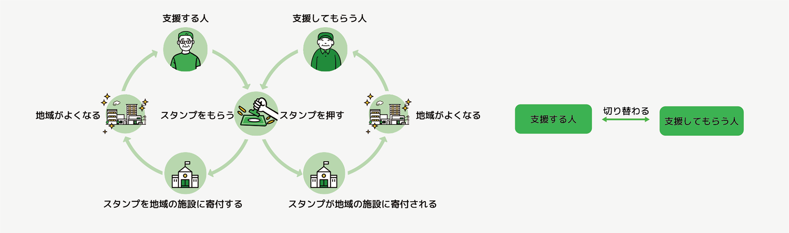
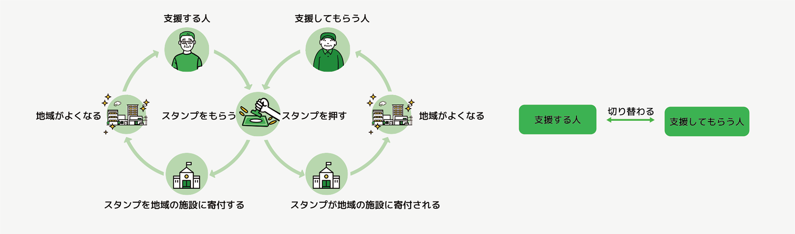
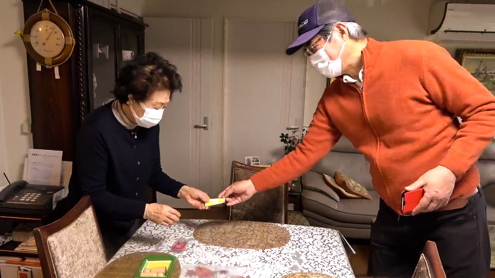
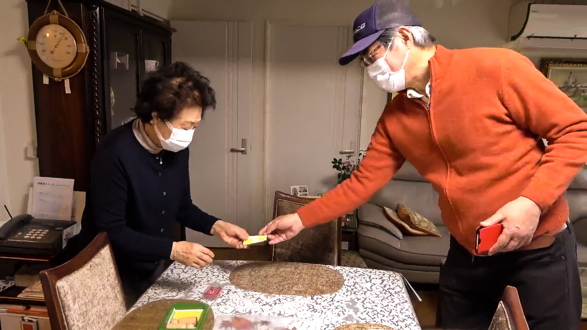

 
高齢者を支援するための生活サービスの研究
Research on life support service for the elderly
魏 春翠
WEI Chuncui
日本では高齢化が急速に進んでいる。社会で元気で活躍する高齢者も増えている。高齢者が生きがいを持って、安心して生活できる環境を整えることが今後の大きな課題であると考え、助け合うコミュニティについて研究を進めることとした。
本研究では、高齢者を対象にして、様々な支援を行なう生活サービスの仕組みについて研究する。様々な日常生活において支援を必要とする高齢者に、地域の人とのつながりや公共のサービスを良く活用できるような全体的なサービスを通じて、安心して暮らしていくコミュニティを支援することを目的とする。
東京都豊島区をフィールドにして、サービスの連携について検討し、高齢者を支援するアプリを中心として支援するサービスの提案をまとめた。
「Raku」のデザインにおいては、地域の様々なリソースとデジタル技術を組み合わせながら、地域の高齢者の日常生活を支えるサービスについて考えた。そして、高齢者向けのアプリケーションを制作した。 「Raku」とは、高齢者に向け、地域の人とのつながりや公共のサービスをよりよく活用できるようなスマートフォンでのアプリケーションによる全体的なサービスである。このサービスでは、自宅で自立して過ごしている高齢者を想定している。インタビュー調査で、定年退職したとはいえ、それぞれに地域に貢献できることがあることがわかった。また、人から支えられるよりも、自分の力で人を助けられるようになりたいという願望を持つ人のほうが多いことが明らかになった。そして、振り返りながら助け合うコミュニティである「Tsunagu」へと提案を進めた。「Tsunagu」というのは、健康な高齢者と様々な日常生活において支援を必要とする高齢者が、互いに助け合い、支え合うためのサービスである。そして、それを通じて互いに安心して暮らしていくまちをつくっていきたいと考えていた。